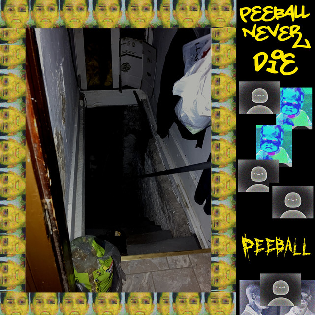
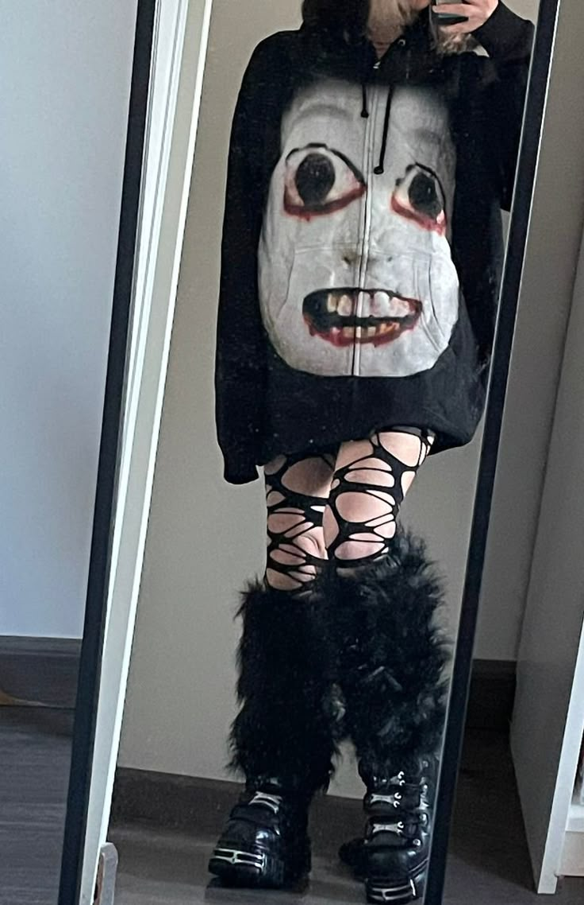
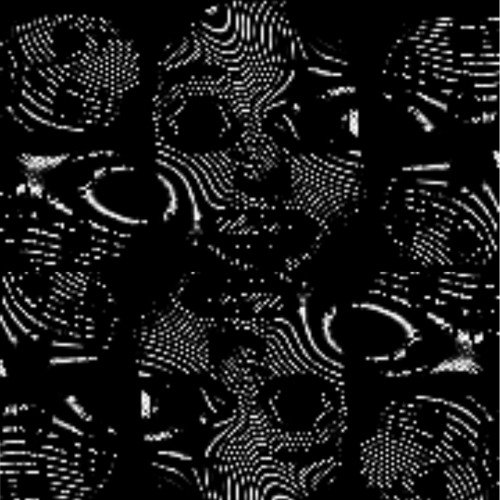
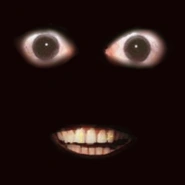
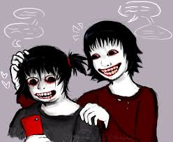

This webpage is a practice webpage for me to learn html and css.
AHENO WORSHIP PAGE
AHENO is a brilliant character
I hope you enjoy the page lol
my yt channel plug Learn more about aheno More images of aheno FAQ aheno
AHENO is a brilliant character
I hope you enjoy the page lol
my yt channel plug Learn more about aheno More images of aheno FAQ ahenoAhenobarbus henocied was an image first uploaded on a facebook gore account in the 2000s. It was popular because it looked disturbing and cool as fuck. The original image behind Aheno is a japanese doll and the “make me cute” image trend on 4chan in 2007. The face is js put onto the dolls head with some partial blood editing. People then referred to it as ahenobarbus henocied or dollthing. Aheno was later used in games like nicos nextbots on roblox and in nextbot mods on Gmod.





This should be the body paragraph
This should be the body paragraph
This should be the body paragraph